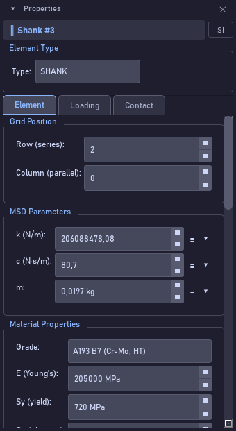

Bolt Analysis Studio 1.0.0 · Guia de uso narrado

| Controle | O que faz |
|---|---|
| Type | O tipo do elemento selecionado. |
| Row (series) / Column (parallel) | Posição na cadeia. Elementos na mesma coluna estão em paralelo. |
| k (N/m) | Rigidez axial. Do parafuso: E vezes área resistente sobre comprimento de aperto. |
| c (N·s/m) | Amortecimento viscoso. Efeito quase nulo na perda de pré-carga quase-estática. |
| m | Massa do elemento, em quilogramas. |
| ≡ / ▾ ao lado de k, c, m | Ligam ou desligam o cálculo automático e abrem as opções de cálculo. |
| Grade | Classe do material, do banco de dados embutido. |
| E, Sy, Su, ρ | Módulo de elasticidade, escoamento, ruptura e densidade. |
| μ thread / μ bearing | Coeficientes de atrito iniciais na rosca e sob a cabeça. |
| Surface | Acabamento: aço nu, zincado, lubrificado… |
| Preload & Yield › Mode / % Yield / Force / Result | Pré-carga por fração do escoamento ou por força direta; a área resistente e a força resultante aparecem em Result. |
| Thermal Properties › α (expansion) / T reference / T operating | Coeficiente de dilatação e temperaturas de referência e de operação; a diferença entre elas gera pré-carga térmica. |
| Geometry › Diameter / Length / Pitch | Diâmetro, comprimento e passo do elemento; alimentam o cálculo automático de k. |
| Contact Interface Properties › k normal / k tangential / c normal / c tangential / μ static / μ kinetic | Só para uma ligação selecionada: rigidezes e amortecimentos normal e tangencial, atrito estático e cinético. |
| Thread Contact Parameters › Pitch / Helix angle / Mean radius / Engagement | Rosca: passo, ângulo de hélice, raio médio e comprimento engajado. |
| Bearing Contact Parameters › Inner radius / Outer radius / Effective r / Roughness | Apoio: raios interno e externo da face, raio efetivo de atrito e rugosidade. |
| Gasket Contact Parameters › Gasket type / Thickness / Compression E / Hertz exponent / Creep coeff | Gaxeta: tipo, espessura, módulo de compressão, expoente de Hertz e coeficiente de fluência. |